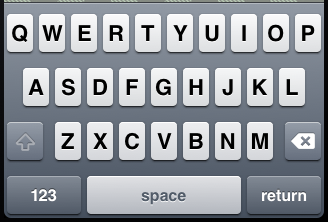
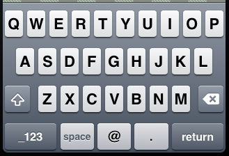
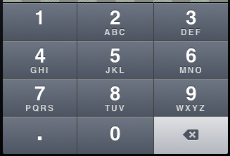

iOS et keyboardType
Comme j’ai cherché une page qui ressemblerait à celle-ci et que je ne l’ai pas trouvée, voici ma compilation “à quoi ressemble tel type de clavier d’iOS selon la valeur de UIKeyboardType ?”.
Bien sûr, ce travail est très limité :
- je montre seulement les touches accessibles via la vue principale du clavier
- je montre seulement la version iPhone en orientation portrait
- je montre seulement les types de clavier non deprecated sur le SDK 4.2
Mais quand même, ça peut être utile.
(s’il existe une page similaire faisant davantage référence, n’hésitez pas à en faire part dans les commentaires)
UIKeyboardTypeDefault
Use the default keyboard for the current input method.
Available in iOS 2.0 and later.

UIKeyboardTypeASCIICapable
Use a keyboard that displays standard ASCII characters.
Available in iOS 2.0 and later.

UIKeyboardTypeNumbersAndPunctuation
Use the numbers and punctuation keyboard.
Available in iOS 2.0 and later.

UIKeyboardTypeURL
Use a keyboard optimized for URL entry. This type features “.”, “/”, and “.com” prominently.
Available in iOS 2.0 and later.

UIKeyboardTypeNumberPad
Use a numeric keypad designed for PIN entry. This type features the numbers 0 through 9 prominently. This keyboard type does not support auto-capitalization.
Available in iOS 2.0 and later.

UIKeyboardTypePhonePad
Use a keypad designed for entering telephone numbers. This type features the numbers 0 through 9 and the
*and#characters prominently. This keyboard type does not support auto-capitalization.
Available in iOS 2.0 and later.

UIKeyboardTypeNamePhonePad
Use a keypad designed for entering a person’s name or phone number. This keyboard type does not support auto-capitalization.
Available in iOS 2.0 and later.

UIKeyboardTypeEmailAddress
Use a keyboard optimized for specifying email addresses. This type features the “@”, “.” and space characters prominently.
Available in iOS 2.0 and later.

UIKeyboardTypeDecimalPad
Use a keyboard with numbers and a decimal point.
Available in iOS 4.1 and later.
